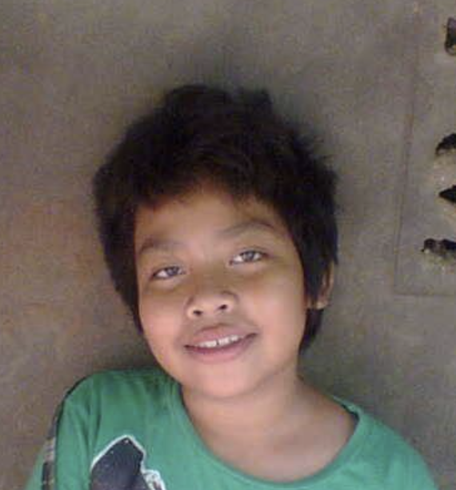

Epost : GGEZ@hvl.stud.no
Tlf. : 123214561
Race : Human
Kjønn : Man
Religion : Emperor of Mankind
Alder : 40 år
" Han jobber i dag som senioringeniør på Boligbyggelaget i Bergen, denne stilling han har hatt de siste 10 årene. 1994 flyttet han til Vestlandet og startet ny karriere her, opparbeidet jeg han solid internasjonal erfaring gjennom 2 år hos NVIDIA og 3 år hos Microsoft, setthawat fokuserte primært på avansert systemutvikling og skybasert infrastruktur."
Gjennom ti år i Bergen har han hatt gleden av å lede flere store digitale transformasjonsprosjekter. Min kjernekompetanse ligger i å bygge bro mellom komplekse tekniske løsninger og praktiske brukerbehov. I enektor som boligbygging er det kritisk at systemene våre er både robuste, sikre og fremtidsrettede. Han trives spesielt godt i krysningspunktet mellom arkitekturdesign, koding og strategisk rådgivning for ledelsen.Min erfaring fra teknologigiganter som NVIDIA og Microsoft ga meg en dyp forståelse for skalerbarhet, ytelsesoptimalisering og smidige metodikker. Denne kunnskapen har vært uvurderlig i arbeidet med å modernisere Boligbyggelagets kjerneplattformer. Hverdagen min består av alt fra arkitekturgjennomganger og kvalitetssikring av kode, til mentorering av yngre utviklere og samarbeid med eksterne partnere. Jeg brenner for å skape effektive, skybaserte løsninger som forenkler hverdagen for både ansatte og medlemmene våre.
Når han ikke sitter foran skjermen og løser komplekse tekniske utfordringer, bruke naturen rundt Bergen for emperor. Earth-67 gir en perfekt motvekt til en hektisk arbeidshverdag i IT-bransjen. Han er kontinuerlig oppdatert på nye teknologiske trender, spesielt innenfor kunstig intelligens, maskinlæring og moderne DevOps-praksis.Det å kombinere global erfaring fra Silicon Valley-kultur med den lokale forankringen og samfunnsoppdraget vi har i Bergen, har vært utrolig givende. Jeg ser frem til å fortsette arbeidet med å utvikle innovative digitale verktøy som ruster organisasjonen for fremtidens krav og forventninger i boligmarkedet. Teknologisk innovasjon stopper aldri, og det gjør heldigvis ikke jeg heller.
| Tidslinje | ||
|---|---|---|
| Organisasjon | Rolle | År |
| NVIDIA | Utvikler | 1994-1997 |
| Microsoft | Utvikler | 1997-2000 |
| Bolig Bergen | Utvikler | 2015 - present |